Vela
Vela is a wind, water and weather forecasting app that is meant for water enthusiasts of all levels. It gives you access the latest local forecasts and news, gorgeous, easy to read and detailed maps and an entire community of like minded people.
My Role
UI/UX - Research, Interviews, Information Architecture, Wireframes, Prototypes, Tests, Interaction Design.
Timeline
Apr 2019 - Dec 2019.
Tools
Photoshop, Sketch, Invision
View Demo case study summaryContext
Vela was created as a requirement for Careerfoundry’s UX Immersion course. Some of the specs detailed in the project brief were a mobile first approach to a water sports based forecast app that caters to beginners, demystifying complex charts and numbers that often stymie newbies just looking for a good day out on the water.
Problem Statement
Users need an app that provides water, wave and weather forecasts in an intuitive yet aesthetic format and helps in making their day out in the water a memorable one. We will achieve our threshold for the app when the reviews are overwhelmingly positive and the download rate is high.
Objective
Primary Goal
To provide a tool that safely guides and motivates beginner water enthusiasts to spend more time on the water.
Questions to be answered
- What features do users really want in a water sport and forecast app ?
- What are proven design patterns that keep users motivated ? What patterns annoy users ?
- How important is community to water sport enthusiasts ?
- What are the most effective search criteria to keep the app personalized ?

Process
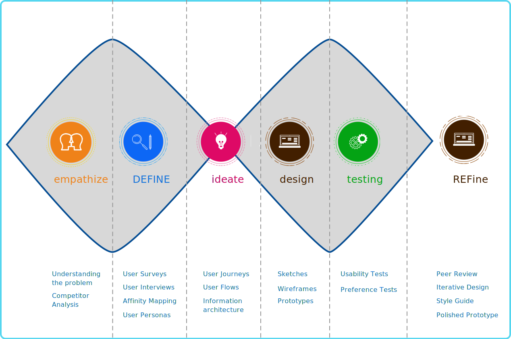Research
SWOT Analysis, Affinity Maps & User Personas
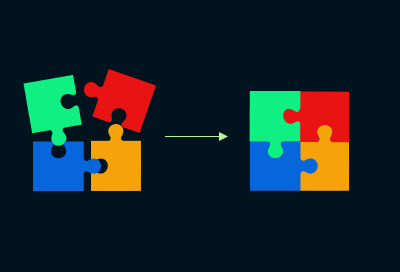 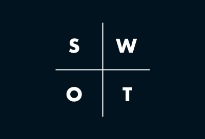 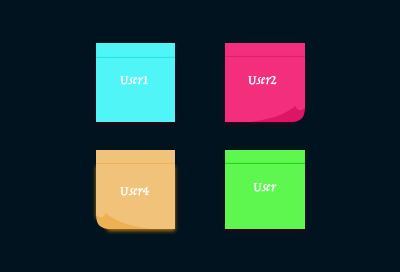 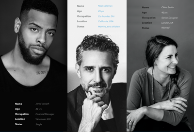{kind=link}
{kind=link}
{kind=link}
{kind=link}
Typical patterns from a perspective of an engaging forecast app -
- Efficient and value adding onboarding.
- Hyperlocal & Personalized forecasts - the most value for a water enthusiast is to avail a forecast that is relevant to him/her.
- Community - a social network all its own of fellow water enthusiasts of all levels.
- The safety aspect - to keep safe on the water is the highest priority, irrespective of ability.
Journey Mapping
SiteMaps, User Flows & User Journeys
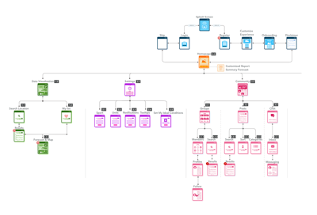 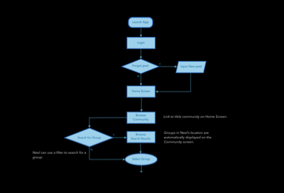 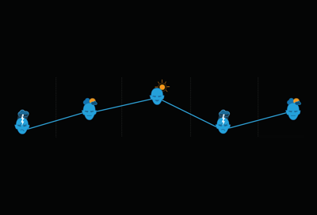{kind=link}
{kind=link}
{kind=link}
- Understand the complexity of the content - I was able to gauge if the features I planned to take on were too complex and pare down where necessary. Features like different models and formats of forecasts & Resources like articles and newsletters, while a potential and attractive addition in the future, did not need to be factured into a MVP.
- Understand patterns - I was able to understand and anticipate the cognitive patterns of users in order to create an app that enables this state of flow defined in the user flow. It became clear very quickly while charting user flows that each water sport would require a different set of weather metrics and this would influence layout heavily.
- High level functionality - A quick snapshot of the functionality was available through user journeys. I got a good idea of how the different features like Community and Forcasts would work at a high level while starting to drill down on specifics.
Sketches & Wireframes
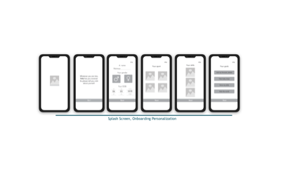{kind=link}
{kind=link}
- Map out the functionality of the app - I was able to define the main menu items at this stage and could get a clear idea of how the information would flow throughout the app as I had gathered from the user flows, journeys and sitemap.
- Recognize constraints - Time. With these early sketches, I quickly recognized that executing a high fidelity prototype with good research baked in would require sacrificing the complexity of some of the features, or entire features altogether I had envisioned in the user flow. A MVP was the first goal, sticking to the project brief, while allowing for feedback based improvement before adding bells and whistles.
- Catch usability problems early - With the rapid sketches, I was starting to realize that the map had to be the focal point of the home page. Any additional information would be easily accessible with a click, but the map and the overlay were enough to give the user a quick snapshot of current conditions in their area.
Testing
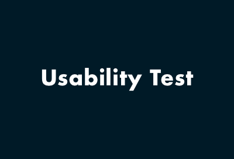 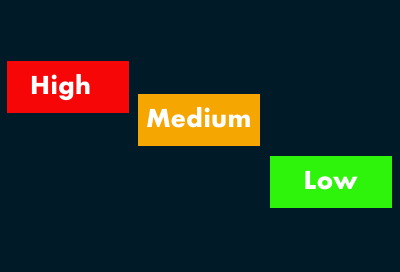 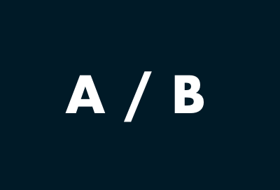{kind=link}
{kind=link}
{kind=link}
- Onboarding -I needed function oriented onboarding to make the functionality of the app easier to understand for beginners. Given that the nature of forecasting is complex and vast, making that change was an important step in the right direction with usability.
- Range of values in the Ideal conditions slider - For the user to set up ideal conditions to notified when the forecast encouraged a day out in the water, I made the change to add a range of values for the user to choose instead of single numbers. This was more in tune with the way weather metrics work.
- Card Grid - My primary concern with the layout was the icon sizes. A/B Testing confirmed to me that big sized icons and card grid layout offered better readability than a columnar approach with smaller icons.
Branding
Logo
The Vela logo is a simple V with a small wave attached to the top. The text in the logo denotes the three Ws, wind, wave and weather that are highly relevant to the app.
Typography
The primary typeface, Futura has an appearance of efficiency and forwardness and uses simple geometric forms: near-perfect circles, triangles and squares. It is also easy to read from a distance. Avenir, an organic interpretation of the geometric style, even in color and suitable for extended text is used for body copy and accents or moments of discovery.
Color
Blue is considered beneficial to the mind and body. Given the feedback in the user interviews about how the time spent on water was a spiritual experience as well as a physical one, it was an obvious choice. It is also the color of the sky and the sea. I used various shades of the color blue to emphasize the nature of the app.
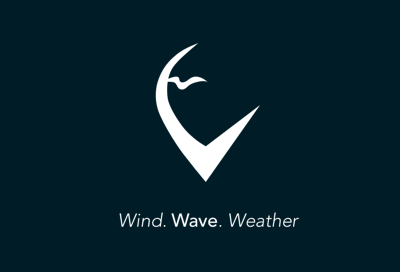 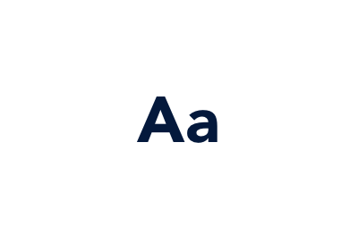 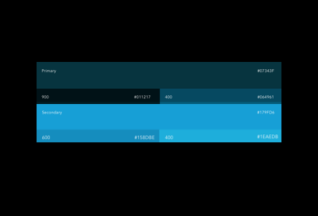{kind=link}
{kind=link}
{kind=link}
{kind=link}
{kind=link}
{kind=link}
{kind=link}
{kind=link}
{kind=link}
The Solution
Primary Features
1. Onboarding
Onboarding is one of the key factors that can make or break user retention in an app. Forecasting by its very nature is complex and vast. There is a learning curve to understanding the metrics and the visualizations, but the app aims to offer help to the user so they don't get overwhelmed by the information. To this end, I used -
- Benefits oriented onboarding - the user gets benefits of the app, in an attempt to encourage conversion. Here, the focus is on what the app does. These onboarding screens also include permission requests that the users can opt-in for, such as accessing location.

- Function oriented onboarding - focuses on app functionality by teaching the user how to use the app. The user will get a tour of the app with instructions on how to get started and how to perform certain actions. The user can access this tour at any point using the info icon on the screen.
2. Settings
The user needs to be able to control their preferences as they desire. Settings provides the best way for the user to explore their options. Notifications like push, email can be set, frequency of these notification can be defined, units can be changed and Ideal conditions can be set. Ideal conditions is the best way for the user to specify what conditions they feel comfortable with and the app can then notify them when an day out on the water looks promising from a weather / water standpoint.
3. Community

A sense of community turned out to be important to users, both from other methods of research and from the user interviews. A social network all its own for water enthusiasts fosters a sense of belonging, especially for beginners just starting out. Vela Community offers a number of options in that space -
- Groups - Find your groups, connect with people locally, or find an expert who can help take your skills to the next level.
- Posts - Find posts with local conditions, or look for groups that are spendingt the day out on the water. Or post your own experience on the water from last week.
- Chat - Chat with users who live near you or who have that new surfboard you love. Whatever questions you may have, Vela community may just answer them.
4. Forecasts

The main feature of the app, the forecast map is central to the Home page. There are overlays for different forecast metrics, for the sake of clarity. I have restricted access to three at one time, this number seemed like a good compromise for a small screen and relevant metrics that different water sports need. The user can access any metric they want by changing their settings. Some features available via the Map are -
- Timeline - An animated timeline gives the user a quick snapshot of changing conditions during the day.
- Customized Reports - Users can create and access different forecast metrics through Reports, akin to favorites. These reports are customized and offer the user only relevant information. Users can create as many of these reports as they like, but for the sake of clarity, each report has three metrics.
- Expert Summary for the day - Safety is priority for users. One of the best ways to access risk is to listen to experts in the field. Vela provides a summary for the day, along with tips and suggestions from a group of experts.
- Hourly Breakdowns - Detailed hourly breakdowns are available for different metrics.
Interactions & Gestures


Animation
Sign Up
I wanted a seamless sign up experience for the user. Users can create an account or use social media to sign up. There are cues for the user in case of need.
Progressive Onboarding
An optional tutorial offers the user a detailed look at the features and navigation of the app. The Info icon on the Home screen can be used to access this whenever needed.
Settings
Users can use the Settings screen to make changes to their profiles, set or change preferences and notifications.
Community
Vela community is a hub for social interaction. Connect with locals and global water enthusiasts, plan sessions, swap stories and make new friends.
{kind=link}
{kind=link}
Peaks
- Research
-
There are a couple of well established water sport based forecast apps on the market. I spent a considerable amount of time researching them. I found patterns through Competitive Analysis that worked well and some that did not. I used user interviews to zero in on features that users really required in the app. The function oriented onboarding option on Vela is an example of a good feature that follows proven patterns while being unique as a result of the research. It is detailed, accessible very easily and allows the user to gain a real understanding of some of the complex features of the app.
- Skills - User Interviews, Competitive Analysis.
- Process - User Research.
- Solution - Spend time in the research phase finding patterns that work well and apply it appropriately. Continue refining till project delivery. Learn More
- Testing
- I spent time on the test scripts it turned out to be well worth the effort. I got really good feedback from the testing, both usability and A/B preference testing. I was relaxed during the tests after the first one and was able to simplify the functionality of the app with function oriented onboarding and change font sizes as required.
- Skills - Test scripts, Testing.
- Process - Usability Testing, A/B Testing.
- Solution - Organize time efficiently to write detailed Test scripts and conduct tests in a relaxed manner. Learn More
- Accessibility
- I spent some time with meeting AA standards for Accessibility with WCAG. This resulted in changes in the prototype that made the app more accessible for anyone who wishes to use it.
- Skills - Accessibility guidelines application.
- Process - Creative thinking, Visualization..
- Solution - Organize time efficiently to make changes to account for Accessibility or better yet, comply with the guidelines early enough to save yourself some effort. Learn More
Valleys
- Use of Animation
-
The use of animation in mobile apps has to be carefully considered. While it works in a lot of scenarios, not all apps require it. The kind of animation that works for an app like Vela are transitions and gestures, not necessarily illustration based animation. While I did have these transitions in place, I also spent time with some illustrations, which in retrospect, I may skip.
- Skills - Motion Design.
- Process - Animation, transitions..
- Skill Gap - Getting carried away with applying animation.
- Solution - Understand the best way to add value with animation for a particular app.
- Organization of Data
- I was new to the world of water sports and weather forecasts. I did a fair amount of research in the beginning about the subject matter of Vela and become a little overwhelmed by the amount of information I collected. I could have done a better job of organizing that data so I was more efficient with time when going to the DEFINE phase.
- Skills - Organization of research data.
- Process - Note taking.
- Skill Gap - Applying good mobile design patterns.
Potential Improvements
- Interactions & Gestures
-
The use of animation in mobile apps has to be carefully considered. While it works in a lot of scenarios, not all apps require it. The kind of animation that works for an app like Vela are transitions and gestures, not necessarily illustration based animation.
- Skills - Motion Design..
- Process - Animation, transitions..
- Skill Gap Getting carried away with applying animation.
- Solution - Understand the best way to add value with animation for a particular app.
- Responsive Design
- Although the project brief called for mobile first approach which was adhered to, I should still make sure I had at least some part of the interactive prototype designed for different screens.
- Skills - Responsive Design.
- Process - Using Grids and responsive design patterns.
- Skill Gap Quicker implementation of responsive design with mobile first strategy.
- Solution - Gain more knowledge about efficient responsive design patterns and tools to be used to speed up the process.